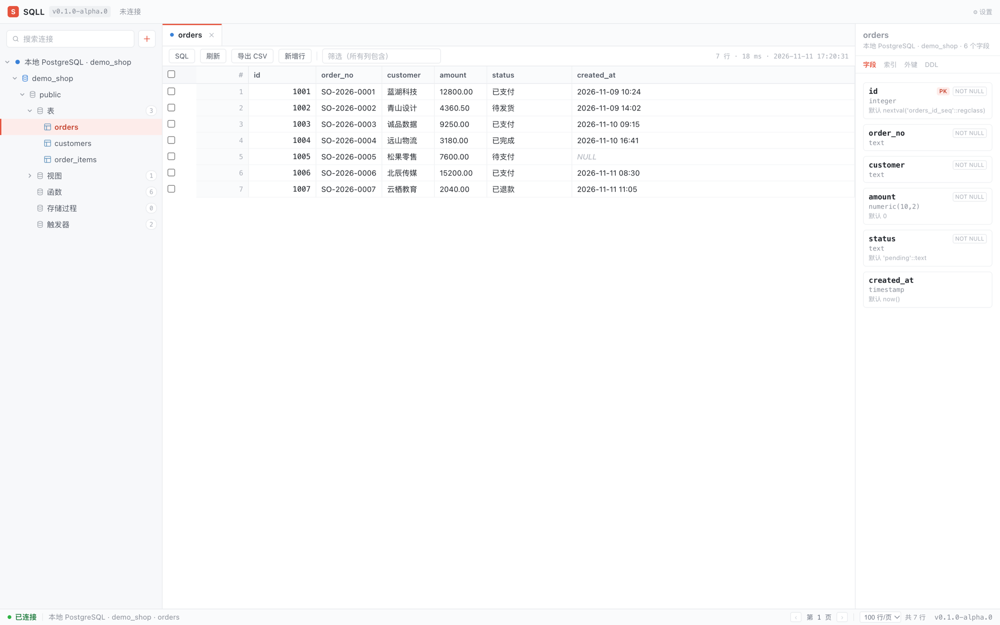
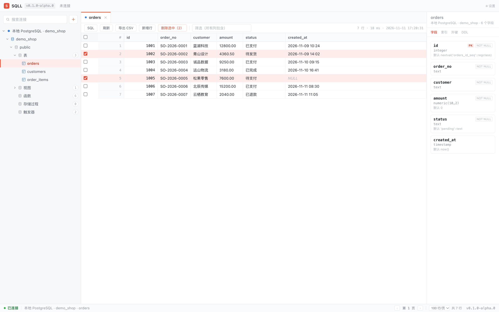
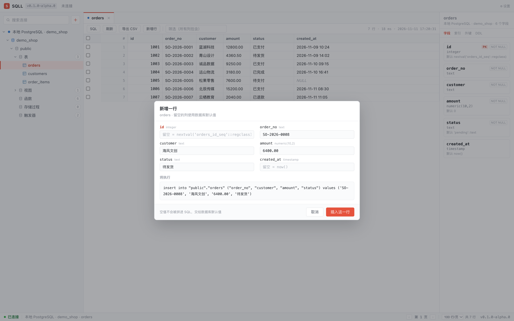
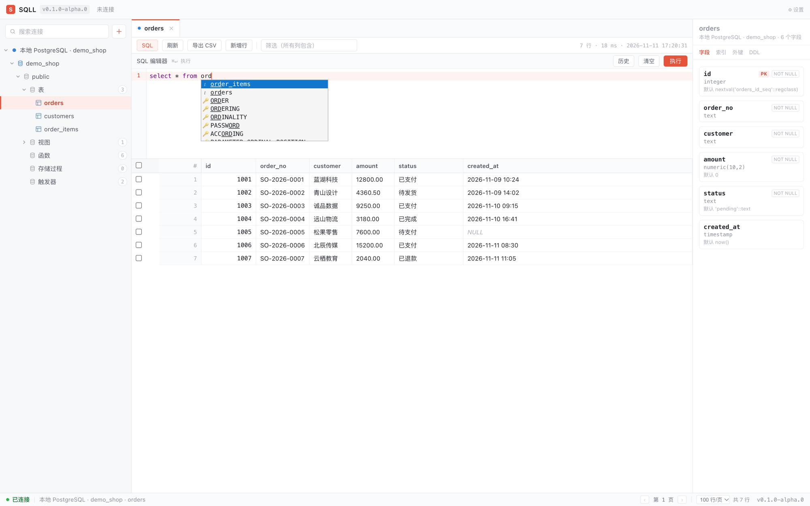
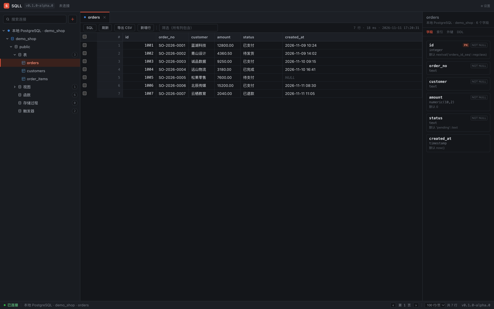

连上 MySQL、PostgreSQL 或 SQLite，左边展开库表结构，中间看数据、改单元格、跑 SQL、导出 CSV， 右边随时翻字段、索引与外键。装完即用，没有示例库、没有账号体系、没有用不上的面板。

不用记快捷键，也不用先学一套查询语言才能打开一张表。围绕日常读表、改表的高频动作设计。
MySQL、PostgreSQL、SQLite 共用同一套浏览、编辑、SQL、导出流程，换库不用换肌肉记忆。
改单元格、加一行、删一行、批量删，都会先弹出即将执行的语句；确认了才在事务里落库。
Tauri 2 打包的安装体约 17.5 MB，启动就是一张表，不占内存，也不催你登录。
CodeMirror 6 按连接类型切方言，补全覆盖整个 schema；支持多语句执行、停止查询与历史记录。
右侧随时查看字段类型、可空、默认值、主键、注释，以及索引、外键与可复制的 DDL。
浅色 / 深色 / 跟随系统三档主题；⌘K 命令面板把刷新、导出、关标签等操作送到键盘指尖。
从打开一张表，到批量删除、新增行、写查询——每一步都把将要发生的事情讲清楚。
选中表名数据立刻铺开；右侧字段面板给出每一列的类型、默认值和注释，切到索引、DDL 可直接复制建表语句。服务端分页、列头排序、单元格双击编辑，NULL 用斜体标出，不与空字符串混淆。

表头一键全选本页，勾中行以粉底加左侧强调条标出；工具条出现「删除选中（N）」。点下先看到即将执行的 DELETE 语句，确认后才真正落库。删除前整行已拍成 INSERT 快照，可一键撤销。

按字段元数据生成表单，留空的列不会拼进 SQL：自增走序列、有默认值走默认值、可空的给 NULL。输入时实时预览将要执行的 INSERT，不用先背语法。

按连接类型切换方言，补全覆盖整个 schema；⌘↵（Windows 为 Ctrl+Enter）执行。一次可贴多条语句，按顶层分号拆分，字符串、注释与 $$ 内的分号不会被误切，遇错即停并回滚。

所有颜色收在设计令牌里，深色只换一套变量：底色压到深灰，选中行变成暗红底加橙字，编辑器跟着一起切。浅色、深色、跟随系统三档，随时切换。
浏览、编辑、SQL、导出与元数据查看，三类数据库共用一致的交互。
连接测试、库列表、表 / 视图 / 函数分组、字段元数据、分页排序筛选、索引外键 DDL、单元格编辑与 CSV 导出。
schema 层级浏览、字段与索引元数据、编辑与撤销、多语句执行；DDL 由元数据拼装生成，停止查询走 pg_cancel_backend。
按文件打开，表 / 视图 / 函数分组、字段元数据、分页排序筛选、编辑新增删除与 CSV 导出；停止查询在 SQLite 上不支持，会如实提示。
桌面壳用 Rust，前端轻量自研，不引入重型组件库；状态、编辑器、菜单与弹窗都按需自己实现。
安装包在 GitHub Releases 提供，支持 macOS、Windows 与 Linux。下载对应平台的版本即可安装运行。